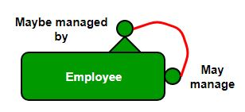
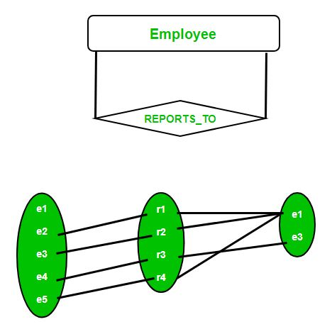

Prerequisite – ER Model
A relationship between two entities of similar entity type is called a recursive relationship. Here the same entity type participates more than once in a relationship type with a different role for each instance. In other words, a relationship has always been between occurrences in two different entities. However, it is possible for the same entity to participate in the relationship. This is termed a recursive relationship.

Example –
Let us suppose that we have an employee table. A manager supervises a subordinate. Every employee can have a supervisor except the CEO and there can be at most one boss for each employee. One employee may be the boss of more than one employee. Let’s suppose that REPORTS_TO is a recursive relationship on the Employee entity type where each Employee plays two roles
- Supervisor
- Subordinate

Supervisor and Subordinate are called “Role Names”. Here the degree of the REPORTS_TO relationship is 2 i.e. a binary relationship.
- The minimum cardinality of Supervisor entity is ZERO since the lowest level employee may not be a manager for anyone.
- The maximum cardinality of Supervisor entity is N since an employee can manage many employees.
- Similarly the Subordinate entity has a minimum cardinality of ZERO to account for the case where CEO can never be a subordinate.
- It maximum cardinality is ONE since a subordinate employee can have at most one supervisor.
Note – Here none of the participants have a total participation since both minimum cardinalities are Zero. Hence, the relationships are connected by a single line instead of a double line in the ER diagram.
To implement recursive relationship, a foreign key of the employee’s manager number would be held in each employee record. A Sample table would look something like this:-
Emp_entity( Emp_no,Emp_Fname, Emp_Lname, Emp_DOB, Emp_NI_Number, Manager_no); Manager no - (this is the employee no of the employee's manager)